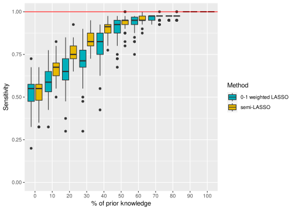
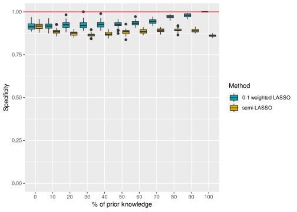
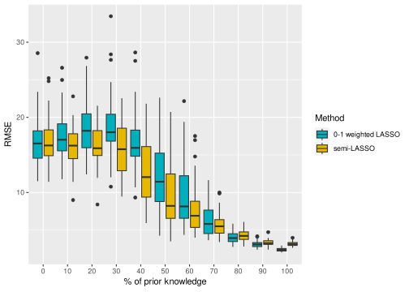
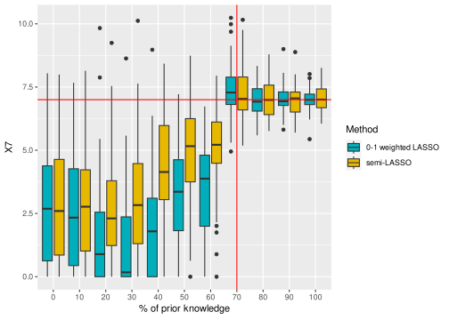

Semi-Lasso: a weighted Lasso designed for the integration of known regressors in linear model
ISSN 2824-7795
This document provides a template based on the quarto system for contributions to Computo. The github repository in itself provides a specific quarto extension useful for authors (and editors!).
Authors
Affiliation
Nicolas Champagnat
Université de Lorraine, CNRS, Inria, IECL, UMR 7502
Anne Gégout-Petit
Université de Lorraine, CNRS, Inria, IECL, UMR 7502
Anouk Rago
Université de Lorraine, CNRS, Inria, IECL, UMR 7502
To encode prior information in a regression problem, statisticians may use a weighted LASSO, in which variables can have different weights in the penalization. In this paper, we propose an alternative method called semi-LASSO, which solves a specific case of weighted LASSO designed for the integration of known regressors in linear model. The optimization procedure is divided in two steps: the first one is an ordinary least squares method and the second one a classic LASSO procedure in lower dimension. Numerical experiments are performed on synthetic data to compare the performances of this new method with the usual weighted LASSO implemented in glmnet. The results show an improvement of the sensitivity, the variable selection and the prediction capability when using semi-LASSO.
1 Introduction
The LASSO (Tibshirani 1996) is a widely used technique when it comes to perform both estimation of parameters and variable selection for a linear model. The penalty on the l_1 norm allows indeed to shrink some coefficients to 0. Moreover, it allows the user to handle cases where the number of variables p is greater than the number of observations n and thus is particularly convenient when one has to deal with large datasets like genomic data. This is why a lot of methods using LASSO and its derivative, like the adaptive LASSO (Zou 2006) or group LASSO (Yuan and Lin 2006) have been developed in particular to infer gene regulatory networks (Siahpirani, Chasman, and Roy 2019; Grzegorczyk, Aderhold, and Husmeier 2019), which depict the relationships between genes. In these references, a regression model for each gene j \in [1,p] is built, giving for each gene a list of regressors linked to it in the network. But inferring this network using only transcriptomic data can be a delicate task due to the massive amount of genes (p\approx 20 000) present in the data compared to the small number of samples n: the LASSO is then a good tool to select the most relevant regressors among the genes.
In some cases, some prior biological information can be available and therefore be integrated in the model to improve the results. For example, protein-protein interactions are experimentaly tested and the results are publicly available on the online databases of interacting proteins (Xenarios et al. 2000). When using a LASSO, one way to perform prior information integration is to specify different penalty strengths for each gene/variable during the estimation of parameters, which is referred as the weighted LASSO and has been applied in various references. Bergersen, Glad, and Lyng (2011) use two different weights to add prior knowledge in their model : the first one is based on the correlation between gene expression and gene copy numbers, the second one relies on the association of gene copy number with survival. A weighted graphical LASSO is performed by Charbonnier, Chiquet, and Ambroise (2010) where prior information on the topology of the network is used. Greenfield, Hafemeister, and Bonneau (2013) rely on the elastic-net algorithm (Zou and Hastie 2005), and modifies the l_1 norm to add prior knowledge on genes interactions. Moreover, it has been shown that optimizing the amount of prior knowledge included into the model gives significantly better results (Cassan et al. 2023). From a larger perspective, specifying different penalty weights can be useful in any regression problem where prior information on the potential regressors is available. The R package glmnet(Friedman, Hastie, and Tibshirani 2010) allows the user to do it, by tuning the penalty.factor parameter.
In this paper, we focus on a penalized linear regression model with prior information. We assume that this prior knowledge takes the form of a certainty that some potential regressors must belong to the model. In this particular case, their penalty strength is set to 0 as we want to be sure to include them in the model. Concerning the other potential regressors for which we have no information, we assume that their penalty strength is the same for all. The number of known regressors should not exceed the number of observations n, otherwise the method we propose would be inapplicable. As opposed to the procedure used in glmnet, which consists in optimizing the objective function directly with a cyclical coordinate descent method, we propose to first transform the problem to divide the optimization procedure in two steps, one which is an ordinary least squares method and the second one being a classic LASSO procedure in lower dimension. We will see that this procedure actually improves the parameters estimation, the true positive variables selection and reduces the error of prediction.
The paper is organized as follows. In Section 2, we introduce the LASSO and weighted LASSO, and explain how to deal with the glmnet package. Section 3 presents our method called semi-LASSO. Finally, we compare the performance of glmnet and semi-LASSO on simulated datasets in Section 4 and discuss the results in Section 5.
2 LASSO and weighted LASSO
We suppose that we have a set of p explicative variables (X_1,\dots,X_p) \in \mathbb{R}^p and a response variable Y \in \mathbb{R} such that:
Y = \beta_0 + \sum_{j=1}^p \beta_jX_j + \epsilon \,,
\tag{1} with \epsilon \sim \mathcal{N}(0,\sigma^2) a centered noise and \boldsymbol \beta = (\beta_0,\beta_1,...,\beta_p) \in \mathbb{R}^{p+1} the coefficients of the model, potentially equal to zero. We also assume having n realizations of X_1,\dots,X_p and Y: we note \mathbf x = (x_{ij}) the n \times (p+1) matrix of observations, the first column being filled with ones, and \mathbf y \in \mathbb{R}^n the observations of Y. Then the penalized LASSO regression is:
with \lambda a positive regularization parameter and \text{P}(\boldsymbol\beta) the LASSO penalty defined by:
\text{P}(\boldsymbol\beta) =\sum_{j=1}^p|\beta_j| \,.
\tag{3} The bigger \lambda is, the more the coefficients \boldsymbol \beta are penalized, which leads to more 0 coefficients and a sparser model. To solve Equation 2, two methods can be used. The first one, called the LARS algorithm (Efron et al. 2004) and implemented in the R package lars, relies on the correlation between the explicative variables and Y, and is not discussed here. The second one is a coordinate gradient descent directly applied on the objective function, as done in the R package glmnet(Friedman, Hastie, and Tibshirani 2010). In Equation 3, all \beta_j coefficients are treated the same way and are equally penalized, as the data is beforehand normalized before solving the optimization problem in glmnet. A possible extension for the LASSO is to add a different weight for each variable. The objective lying behind these weights can either be:
to reduce the conflict between optimal prediction and consistent variable selection, thus achieving some theoretical properties. This is the adaptive LASSO, introduced by Zou (2006). In this case, the weights are first determined and linked to the data, then iteratively refined to reach some oracle properties.
to add some prior information on the potential regressors of the model (Bergersen, Glad, and Lyng 2011; Charbonnier, Chiquet, and Ambroise 2010; Greenfield, Hafemeister, and Bonneau 2013), as detailed in Section 1. This method is called the weighted LASSO. This variant of the LASSO can also resolve the issue raised by variables with similar profiles: only one of them is generally included into the model, not always the most relevant one. By including prior knowledge and so different weights in the objective function, the optimization step leads to a more relevant variables selection.
In these cases, the penalty function becomes:
\text{P}_{\boldsymbol w}\,(\boldsymbol\beta) =\sum_{j=1}^p w_j\,|\beta_j| \,.
\tag{4} where \boldsymbol w = (w_1,\dots,w_p) \in (\mathbb{R}^+)^p is the weights vector. A coefficient with a small weight will be less penalized than a coefficient with a big one, and is more likely to be included into the final model. This new problem can be solved with the same gradient descent method of glmnet used to solve Equation 2. When using this R package, it is possible to specify particular weights with the penalty.factor parameter.
3 Semi-LASSO, a specific weighted LASSO with a priori knowledge
3.1 Adding prior information into the model
Linear regression models with penalization are very used in the field of gene network inference (Siahpirani, Chasman, and Roy 2019; Grzegorczyk, Aderhold, and Husmeier 2019; Huynh-Thu and Sanguinetti 2019). First because they can deal with big data especially when n\ll p, then because they can select only a few interesting genes as regressors. Biologists are indeed aware that gene regulatory networks are sparse (Leclerc 2008), which makes of the LASSO an interesting method as it offers the possibility to perform variable selection among thousands of genes. But today, a lot of biological information is available concerning the links existing between genes. This information can be added in the model by using a weighted LASSO as described in Section 2, with carefully chosen weights.
For this purpose, we focus in this paper on a specific case of weighted LASSO, where the weights can be either 0, which means no penalization, or 1, as in the usual LASSO. Concretely, a weight equals to 0 means that the variable associated to this weight will always be included in the model: the associated regression coefficient \beta_j will generically be non-zero. It corresponds to the variable for which we are certain that it has a relationship with Y, for example a known protein-protein interaction.
The variables \mathbf X are then divided into two groups:
G_K -K for Known-, the set of variables for which we are certain they are part of the model, as we have prior knowledge on their relationship with Y. The method does not penalize these variables and their weight will be set to 0.
G_{U} -U for Unknown-, the set of variables for which we have no prior information on their relationship with Y. Their weights will be set to 1, each of them being penalized the same way by the parameter \lambda.
As it seems reasonable to assume the presence of an intercept in the majority of real data modeling, the variable corresponding to the parameter \beta_0 in Equation 1 is always set in G_K. The sum of cardinals of the two groups is G_K and G_U is p+1 and we also assume in what follows that the number of variables in G_K never exceeds n, otherwise the method we propose would be inapplicable.
3.2 Mathematical formulation
Using the notations above and those of Section 2, the problem we want to find the argmin in the following minimization problem:
\min_{(\beta_0,\beta_1,\dots,\beta_p)} \quad \frac{1}{2n}||\boldsymbol y-\boldsymbol x\boldsymbol \beta||^2_2 + \lambda \text{P}_{\boldsymbol 1}(\boldsymbol\beta)\,,
\tag{5} with :
\text{P}_{\boldsymbol 1}\,(\boldsymbol\beta) = \sum_{j=1}^p\,\mathbb{1}_{X_j \in G_U}|\beta_j|= \sum_{j,\,X_j \in G_U}\,|\beta_j| \,. \\
We note \boldsymbol \beta_K (respectively \boldsymbol \beta_U), the vector \boldsymbol \beta_K = (\beta_j, \,X_j \in G_K) (respectively \boldsymbol \beta_U = (\beta_j, \,X_j \in G_U)). In a similar way, we denote by \mathbf x_K (respectively \mathbf x_U) the matrix containing the n observations of the variables in G_K (respectively G_U). Equation 5 can be rewritten as:
The minimum in \boldsymbol \beta_K takes the form of :
\begin{aligned}
\min_{\boldsymbol \beta_K} \, \frac{1}{2n}||\boldsymbol y-\boldsymbol x\boldsymbol \beta||^2_2
& = \min_{\boldsymbol \beta_K} \, \frac{1}{2n}\sum_{i=1}^n(y_i-\beta_0- \sum_{j,\,X_j \in G_U} x_{ij}\beta_j -\sum_{j,\,X_j \in G_K} x_{ij}\beta_j)^2\\
&= \min_{\boldsymbol \beta_K} \, \frac{1}{2n}\sum_{i=1}^n(z_i-\beta_0 -\sum_{j,\,X_j \in G_K} x_{ij}\beta_j)^2 \,,
\end{aligned}
\tag{6} with \mathbf z = (z_i)_{1\leq i \leq n} = (y_i-\sum\limits_{j \in G_{U}}x_{ij}\beta_j)_{1\leq i \leq n} = \mathbf y-\mathbf x_{U}\boldsymbol\beta_{U} . The minimum above is reached when \boldsymbol \beta_K is the ordinary least squares estimator, under the assumption that \mathbf x_K^t\mathbf x_K is invertible, which implies in particular that the cardinal of G_K is lower than n. We have:
\text{}\widehat{\boldsymbol\beta_K}=\widehat{\boldsymbol\beta_K}(\boldsymbol\beta_U) = (\mathbf x_K^t\mathbf x_K)^{-1}\mathbf x_K^t\mathbf z \,.
\tag{7}
Using this expression for \widehat{\boldsymbol\beta_K}, Equation 6 becomes:
\min_{\boldsymbol \beta_U} \big( \frac{1}{2n}|| \mathbf u - \mathbf v \boldsymbol \beta_U||^2_2 + \lambda \sum_{j,\,X_j \in G_U}\,|\beta_j| \big) \,.
\tag{8}
Hence the minimization problem above corresponds to the classic objective function of the LASSO, and only depends on \boldsymbol \beta_U. The solution of Equation 8 can thus be found numerically, using glmnet for example. Once the solution \widehat{\boldsymbol \beta_U} is computed, we can obtain \widehat{\boldsymbol\beta_K} by injecting the obtained value for \widehat{\boldsymbol \beta_U} in Equation 7. The pseudocode corresponding to this procedure of estimation, called semi-LASSO, is given below in Algorithm 1.
An alternative solution would be to use glmnet directly, by specifying 0 and 1 weights in the penalty.factor argument: this procedure will be refered as 0-1 weighted LASSO in what follows.
The semi-LASSO method can be more efficient than the 0-1 weighted LASSO for the following reasons. By separating the variables in two distinct groups before numerically optimizing the objective function Equation 5, we find ourselves solving two different minimization problems. The first one is an ordinary least squares regression, which has a well-known analytical solution, and the second one is a classic LASSO regression. This second problem will be solved numerically, but in a space of smaller dimension (less variables) compared to the 0-1 weighted LASSO. We will see in the next sections that our semi-LASSO method actually improves the parameter estimation, the sensititvity and reduces the error of prediction.
\begin{algorithm} \caption{Semi-LASSO} \begin{algorithmic} \State \textbf{Inputs}: \\ $\quad$ $G_K$ and $G_U$ the groups of variables \\ $\quad$ $\mathbf x \in \mathcal{M}_{n \times p}(\mathbb{R})$ the data matrix \\ $\quad$ $\mathbf y \in \mathbb{R}^n$ the vector of observed values for $Y$ \\ \State \textbf{Output:} \\ $\quad$ $\boldsymbol{\beta}$ the vector of coefficients \\ \If{$G_K = \emptyset$} \Comment{No prior information is known} \State $\boldsymbol \beta$ obtained with classical LASSO \\ \ElsIf{$G_U = \emptyset$ \And $|G_K| \leq n$ } \Comment{All regressors are known} \State $\boldsymbol \beta$ obtained with classical regression \\ \Else \State compute $\mathbf x_K$ and $\mathbf x_U$ from $\mathbf x$ \State add a column of $1$ in $\mathbf x_K$ for the intercept estimation \State compute $\mathbf u = (I_n-\mathbf x_K(\mathbf x_K^t\mathbf x_K)^{-1}\mathbf x_K^t)\mathbf y$ and $ \mathbf v = \mathbf x_{U}-\mathbf x_K(\mathbf x_K^T\mathbf x_K)^{-1}\mathbf x_K^t\mathbf x_{U}$ \State solve $\min_{\boldsymbol \beta_U} \big( \frac{1}{2n}|| \mathbf u - \boldsymbol \beta_U\mathbf v||^2_2,+ \lambda \sum_{j,\,X_j \in G_U}\,|\beta_j| \big)$ with glmnet to obtain $\widehat{\boldsymbol\beta_U}$ \State deduce $\widehat{\boldsymbol\beta_K}$ \EndIf \end{algorithmic} \end{algorithm}
4 Numerical experiments
To compare our method of parameters estimation with the one of 0-1 weighted LASSO, we perform numerical simulations. We focus on simulations where the number of observations n=100 and the number of covariates p =500. We also choose to run simulations where the explanatory variables (X_1,\dots,X_p) are correlated, to put our algorithm in a more challenging situation. Finally, only p_u = 40 variables are actually used to build the model which means only 40 coordinates of \boldsymbol \beta \in \mathbb{R}^p are really used to construct Y.
4.1 Data simulation
To simulate correlated data in a realistic way, we rely on the work by Friguet (2010). We first divide the p variables in H independent groups. For each group h, a covariance matrix is computed using gaussian latent variables to determine correlations between variables, and a dataset of size n \times \frac{p}{H} is sampled from a multivariate normal distribution. The data generated for each group h \in [1,H] are then merged together in a single dataset. The structure of the global covariance matrix of the data is thus block diagonal. An excerpt of this matrix is presented Figure 1 as an example. The code to generate the data, based on page 123 of Friguet (2010), is given below, the parameter H being set to 5.
Hide/Show the code
library(mvtnorm)library(corrplot,quietly =TRUE)
corrplot 0.92 loaded
Hide/Show the code
p =500n =100H =5constant =10# interceptq =rep(4,H) # number of latent variables in each groupstrength =7/10# level of the correlation between variables of the same groupdata =matrix(rep(0, n*p), ncol = p, nrow = n)for (h in1:H){ B_k = strength*rmvnorm(p/H, mean =rep(0, q[h]), sigma =diag(q[h])) Sigma_k =apply(B_k^2, 1, sum) +rep(1, p/H) B_k =diag(1/sqrt(Sigma_k))%*%B_k Psi_k =diag(1/Sigma_k)# matrix of var-covar Var_k = B_k %*%t(B_k) + Psi_k# data generation X_k =rmvnorm (n, mean =rep(0,p/H), sigma = Var_k) # mean 0 data[,((h-1)*p/H+1):(h*p/H)] = X_k }data =as.data.frame(data)
Hide/Show the code
load("data/V_k_same.RData") # final matrix of var covarVar_covar =matrix(rep(0,p*p),ncol=p,nrow = p)for (h in1:5){ Var_covar[((h-1)*p/H+1):(h*p/H),((h-1)*p/H+1):(h*p/H)] = Var_list[[h]]}corrplot(Var_covar[c(1:20,101:120,201:220,301:320,401:420),c(1:20,101:120,201:220,301:320,401:420)],tl.pos ='n',addgrid.col=NA)#c = corrplot(cor(data[,c(1:20,101:120,201:220,301:320,401:420)]),tl.pos = 'n',addgrid.col=NA) empiric matrix
Figure 1: Correlation matrix of the variables of the model. Only the first 20 variables of each group are plotted.
Once we got the data matrix \boldsymbol x, we compute \mathbf y using the 8 first variables of each group. The coefficients \beta_j which are not 0 go from 1 to 8 in each group. Our final model for the numerical simulations is thus:
y = \beta_0 + \sum_{j=1}^8 \beta_jx_j + \sum_{j=101}^{108} \beta_jx_j + \sum_{j=201}^{208} \beta_jx_j + \sum_{j=301}^{308} \beta_jx_j + \sum_{j=401}^{408} \beta_jx_j + \epsilon \,,
with \beta_1 = \beta_{101} = \dots = \beta_{401} = 1, \quad \dots \quad,\beta_8 = \beta_{108} = \dots = \beta_{408} = 8 and \epsilon \sim \mathcal{N}(0,4).
Hide/Show the code
library(expm,quietly =TRUE)
Attaching package: 'expm'
The following object is masked from 'package:Matrix':
expm
To see how the semi-LASSO algorithm performs with different levels of prior knowledge, we progressively add variables from the G_U group to the G_K group. 11 scenarii are tested, starting with with G_K = \emptyset where no regressor is known. We then add 4 variables (corresponding to 10\% of true regressors) in G_K several times to finally reach G_K = (X_{j_1},\dots,X_{j_{p_u}}) where X_{j_1},\dots,X_{j_{p_u}} are the p_u variables used to build the model (j_1 = 1,\dots,j_8=8,j_9=101,...,j_{40}=408), as explained in Table 1. One variable of each group h \in [1,H-1] is added in scenarii s_1 to s_8, then four variables of the last group h=H are added in s_9 and s_{10}. In scenario s_{10}, all p_u variables have been added to G_K.
Table 1: Description of each scenario to estimate the \boldsymbol \beta coefficients
Scenario
% of prior knowledge
Variables in G_K
Variables in G_U
s_0
0
0
500
s_1
10
4
496
s_2
20
8
492
s_3
30
12
488
s_4
40
16
484
s_5
50
20
480
s_6
60
24
476
s_7
70
28
472
s_8
80
32
468
s_9
90
36
464
s_{10}
100
40
460
Hide/Show the code
# Construction of the vector of prior knowledge used to progressively add variables in G_Kprior_know =c()for (h in1:(H-1)){# for the first 4 groups, the first 8 variables will be progressively added to G_K # (corresponding to scenarii s_1 to s_8) prior_know_h =c(1/10*1:8, rep("not used",92)) # for the variables not used in the model, prior_know is set to `not used`. # It means they will never be included as prior knowledge in the model prior_know =c(prior_know, prior_know_h)}# Concerning the last group (h=5), the first 8 variables will be added in s_9 and s_10prior_know =c(prior_know, rep(0.9,4),rep(1,4), rep("not used",92))names(prior_know) =colnames(data[,-dim(data)[2]])
The vector of prior knowledge is then used to iteratively construct the groups G_K and G_U for each scenario :
Hide/Show the code
Groups_construction <-function (prior,partial_know){# prior : vector of the prior knowledge indicating when the variable enters into the G_K group# partial_know : proportion of partial knowledge to include (between 0 and 1) G_K =c() G_U =c()# G_K = group with a priori# G_U = group with no a priorifor (j in1:length(prior)){if((prior[j]<= partial_know)){ G_K =c(G_K, names(prior)[j]) }else{ G_U =c(G_U, names(prior)[j]) } }list(G_K, G_U)}
4.3 Estimation of the parameters
To select an appropriate value for the parameter \lambda, we use, both in semi-LASSO and 0-1 weighted LASSO methods, the cv.glmnet function which performs 10-fold cross-validation. K=50 datasets are generated following the scheme of Section 4.1. A parameters estimation is performed for each simulation in order to evaluate the variability coming both from the noise \epsilon in Equation 1 at the step of data generation and the cross-validation in cv.glmnet . We use both semi-LASSO and 0-1 weighted LASSO to estimate \boldsymbol \beta given a dataset and a scenario of Table 1. All the results presented in Section 5 are shown as boxplots relative to these 50 replica. The code below shows how the parameters estimation is performed for a particular dataset.
Hide/Show the code
library(attempt)library(glmnet)
Loaded glmnet 4.1-8
Hide/Show the code
semi_LASSO <-function(known_group, unknown_group, data_transform, response_var, inter =TRUE){# known and unknown groupe give the indices of variables for which we have (or not) an a priori# data_transform is the dataset containing all covariates X and the response# variable Y# response_var gives the name of the variable in the dataset to be considered# as the response variable# inter is TRUE or FALSE to include or not an intercept into the modelwarn_if(response_var %in% known_group ||response_var %in% unknown_group ,isTRUE,msg ="Your response variable will be used as an explicative variable. Maybe you put it in one of the two groups")# Warn if the response variable is put in G_K or G_U n =dim(data_transform)[1] p=dim(data_transform)[2]-1# remove the response variable G_K = known_group G_U = unknown_group ind =which(colnames(data_transform)==response_var)if (length(G_K)==0){# Case when there is no a priori.# Then it's just a classic LASSO model =cv.glmnet(as.matrix(data_transform[,-ind]),as.matrix(data_transform[,ind]),alpha =1,grouped=FALSE, intercept = inter) lambda = model$lambda.1se coeff =coef(model) beta_NK = coeff[2:length(coeff)] beta =rep(0,p+1)names(beta) =c(colnames(data_transform[,-ind]),"Intercept")for(j in1:length(G_U)){ beta[G_U[j]]= beta_NK[j] }# we add the value of intercept beta[p+1] = coeff[1] }if (length(G_U)==0){# Case when all regressors are known# Then it's a classic regression (we suppose that the number of regressors # will not exceed the number of observations) list_names_data =colnames(data_transform)[G_K] lambda =0if (length(list_names_data)!=0){ reg_j =lm(formula =as.formula(paste(response_var, "~ 0+", paste(list_names_data, collapse ="+"))), data = data_transform) resume_j = reg_j$coefficients }else {# The case when j is an initial node with no parent resume_j =rep(0,p) }# Creation of the final vector of coefficients beta =rep(0,p+1)names(beta) =c(colnames(data_transform[,-ind]),"Intercept")for(j in1:length(G_K)){ beta[G_U[j]]= resume_j[j] } }if ((length(G_U)!=0)&(length(G_K)!=0)){# Semi-LASSO# Creation of all necessary objects X_NK and X_K X_NK =as.matrix(data_transform[,G_U]) X_K =cbind(as.matrix(data_transform[,G_K]),rep(1,n)) # we add a column for the intercept Y =as.matrix(data_transform[,ind])# Creation of U and V I_n =diag(n) U = (I_n - X_K%*%solve(t(X_K)%*%X_K)%*%t(X_K))%*%Y # new Y V = X_NK - X_K%*%solve(t(X_K)%*%X_K)%*%t(X_K)%*%X_NK# Performing first step LASSO, to find beta_NK model_NK =cv.glmnet(V,U,alpha =1,grouped=FALSE, intercept = inter) lambda = model_NK$lambda.1se# Getting the estimated coefficients and constructing beta_NK# Be careful, the first parameter is the intercept in the coef() function coeff_NK =coef(model_NK) beta_NK = coeff_NK[2:length(coeff_NK)]# We can deduce beta_K from beta_NK beta_K =solve(t(X_K)%*%X_K)%*%t(X_K)%*%(Y-X_NK%*%beta_NK) beta_K# Construction of the final beta beta =rep(0,p+1)names(beta) =c(colnames(data_transform[,-ind]),"Intercept")for(j in1:length(G_K)){ beta[G_K[j]]= beta_K[j] }for(j in1:length(G_U)){ beta[G_U[j]]= beta_NK[j] }#beta[p+1] = coeff_NK[1] beta[p+1] = beta_K[length(beta_K)] }list(beta,lambda)}
Hide/Show the code
load("data/Data.RData") options( "digits"=5, "scipen"=0) # loading of the list containing the K = 50 datasets# We show how the estimation works using only the first datasetdata_K = Data[[1]]# semi-LASSOregressors_list_by_knowledge =list() # creation of the list of regressors# each element of the list will correspond to a particular scenarioindex =1for (l inseq(0, 1, by =0.1)){ # levels of prior knowledge A_priori_group =Groups_construction(prior_know,l) # construction of G_K and G_U result =semi_LASSO(A_priori_group[[1]], A_priori_group[[2]], data_K,colnames(data_K)[length(colnames(data_K))],inter =TRUE) regressors_list_by_knowledge[[index]] = result[[1]] index = index +1}names(regressors_list_by_knowledge) =seq(0, 1, by =0.1)# 0-1 weighted LASSOregressors_list_by_knowledge_glmnet =list()index =1for (l inseq(0,1, by =0.1)){ weights =as.numeric(prior_know>l) # transformation of prior_know into 0-1 weights# the p+1th variable in data_K is Y reg =cv.glmnet(x =as.matrix(data_K[,-(p+1)]), y =as.matrix(data_K[,(p+1)]), penalty.factor = weights, grouped=FALSE, alpha=1, intercept=TRUE) result =coef(reg)[-1,] # reorder the position of the intercept estimation result =c(result, coef(reg)[1,])names(result)[p+1] ="Intercept" regressors_list_by_knowledge_glmnet[[index]] = result index = index +1}names(regressors_list_by_knowledge_glmnet)<-seq(0, 1, by =0.1)# The first 8 estimated coefficients by semi-LASSO, for a prior knowledge of 20%regressors_list_by_knowledge[[3]][1:8]
To compare the results from semi-LASSO and the 0-1 weighted LASSO, we use the following indicators:
The sensitivity (true positive rate), defined as: \text{se} = \frac{TP}{TP + FN}= \frac{|\{\beta_j\neq0 \} \bigcap \{\widehat{\beta_j}\neq0 \}|}{|\{\beta_j\neq0 \}|}, with \widehat{\beta_j} the estimated parameters of the model. TP is the number of true positives, i.e. the number of true regressors of the model that are correctly selected by the method, and FN is the number of false negatives, i.e the number of true regressors of the model that are not selected by the method. It measures the proportion of true regressors of the model correctly selected by the method among all the true regressors of the model .
The specificity (true negative rate), defined as: \text{sp} = \frac{TN}{TN+FP}\frac{|\{\beta_j=0 \} \bigcap \{\widehat{\beta_j}=0 \}|}{|\{\beta_j=0 \}|}, with TN the number of true negatives, i.e. the variables which are not regressors in the model and not found as such by the method, and FP the false positives, i.e. the variables which are not regressors in the model but found as such by the method. It measures the proportion of variables which are not regressors in the model and that the method correctly identify as such.
The Root Mean Square Error, defined as: \text{RMSE}=\sqrt{\frac{1}{n}\sum_{i=1}^n(y_i-\hat{y}_i)^2}, with \hat{y}_i = \sum_{j=1}^{p}\widehat{\beta_i}x_i the prediction of y_i. It measures the capacity of prediction of the fitted model. It is calculated on a new dataset of size n, constructed with the procedure described in Section 4.1. This dataset was not used to perform the parameters estimation.
Individual coefficients estimation, defined as the gap between the estimated value \widehat{\beta_j} and the true one \beta_j, to identify which method performs better in finding the true value of the coefficients, and the impact of the prior knowledge on the estimation.
The first two criteria concern the ability of the fitted model to select the true regressors whereas the third one assesses the capacity to predict Y. As for the fourth one, it measures the quality of the estimation of a particular \beta_j. We also want to see the impact of the prior knowledge level on these indicators.
5 Results
We present here the results of the simulations introduced in Section 4.
Hide/Show the code
library(ggplot2)load("data/Data_final.RData") # load the RData containing# - parameters estimations for semi-LASSO and 0-1 weighted LASSO# - sensitivity# - specificity# - RMSE on the test dataset
5.1 Sensitivity and specificity
We first give the results about the performance of variables selection, which is emphasized by the sensitivity and specificity described in Section 4.4.
Figure 2 and Figure 3 present respectively the sensibility and the specifity for the semi-LASSO and 0-1 weighted LASSO methods. Each boxplot corresponds to the 50 replica described in Section 4.1, done for both methods (blue for 0-1 weighted LASSO, yellow for semi-LASSO) and a prior knowledge given in abscissa (see Table 1).
We can first notice that in Figure 2 the sensitivity increases with prior knowledge for both methods, which seems coherent with the fact that we force relevant variables to be included into the model. With a level of prior knowledge lower than 80\%, the semi-LASSO method seems to be more efficient in finding true positive regressors. In the semi-LASSO method, we first remove the influence of the variables of G_K before solving a LASSO problem on the remaining variables (see the expressions of \mathbf u and \mathbf v in Section 3). This suggests that this additional step allows the final LASSO procedure to be more efficient in finding true regressors among the remaining variables. When the prior knowledge level is high enough (>90\%), the given information is sufficient for both methods to perform equally well in terms of sensitivity.
Hide/Show the code
ggplot(Data_final, aes(x = PriorKnowledge, y = Sensitivity)) +geom_boxplot(aes(fill = Method), position =position_dodge(0.9)) +scale_fill_manual(values =c("#00AFBB", "#E7B800")) +geom_hline(aes(yintercept =1), color ="red") +expand_limits(y=c(0, 1)) +labs(x ="% of prior knowledge", y ="Sensitivity")

Figure 2: Boxplots of the sensitivity for each prior knowledge scenario and each method of parameters estimation.
Looking at the specificity in Figure 3, we see that it is high for both methods and prior knowledge levels. The 0-1 weighted LASSO method seems to perform better when the prior knowledge level increases, and to limit the number of false positive into the model. The step of LASSO in the semi-LASSO algorithm is performed in a smaller space, and tries to find non-zero values for some coefficients. When the prior knowledge information increases, there are less and less correct regressors to find, which means the LASSO will include more and more irrelevant variables in the model. It is particularly true when the prior knowledge is set to 1 and all correct regressors have been put in G_K. In the 0-1 weighted LASSO, the optimization is done directly in \mathbb{R}^{p+1}, which restricts the number of false positives. In both cases, the global specificity never goes below 0.85, which is satisfying.
Hide/Show the code
ggplot(Data_final, aes(x = PriorKnowledge, y = Specificity)) +geom_boxplot(aes(fill = Method), position =position_dodge(0.9)) +scale_fill_manual(values =c("#00AFBB", "#E7B800")) +geom_hline(aes(yintercept =1),color ="red") +expand_limits(y=c(0,1)) +labs(x ="% of prior knowledge", y ="Specificity")

Figure 3: Boxplots of the specificity for each prior knowledge scenario and each method of parameters estimation.
5.2 RMSE
Regarding the RMSE values plotted in Figure 4, we can see that the semi-LASSO has a lower prediction error than the 0-1 weighted LASSO for a prior knowledge level smaller than 80\%. For higher values, the 2 methods are similar, with a slight advantage for the 0-1 weighted LASSO. This can be explained one more time by the irrelevant variables added into the model by the semi-LASSO method when the prior knowledge level is high.
Hide/Show the code
ggplot(Data_final, aes(x = PriorKnowledge, y = RMSEtest)) +geom_boxplot(aes(fill = Method), position =position_dodge(0.9)) +scale_fill_manual(values =c("#00AFBB", "#E7B800")) +labs(x ="% of prior knowledge", y ="RMSE")

Figure 4: Boxplots of the RMSE calculated on a test dataset for each prior knowledge scenario and each method of parameters estimation.
5.3 Parameters estimation
To illustrate how the methods perform in estimating the parameters, we plot on Figure 5, the estimation of the parameter \beta_7=7, associated to the variable X_7. The horizontal red line indicates the true value of the coefficient, whereas the vertical one shows the first scenario where the variable X_7 is added to G_K (see Table 1).
Until the prior knowledge level reaches 70\%, the semi-LASSO estimates \beta_7 using a classic LASSO, as X_7 is in G_U. Nevertheless, other variables are progressively added to G_K when the prior knowledge level increases. We can see that the estimation based on the semi-LASSO is better than the one made with the 0-1 weighted LASSO. This difference certainly follows from the fact that the optimization performed on a smaller space in the semi-LASSO than the one from the 0-1 weighted LASSO, performed on \mathbb{R}^{p+1}. After we reach 70\% of prior knowledge, X_7 belongs to G_K, which means it has a 0 weight in the 0-1 weighted LASSO, and is estimated via ordinary least squares estimator in semi-LASSO. At this point, both methods perform equally well for the estimation of \beta_7, since we force the variable to be part of the model.
One can notice that for some levels of prior knowledge (20\% to 40\%), glmnet often does not include the variable into the model, i.e. the estimated parameter \widehat{\beta_7} is equal to zero, and thus generates some false negatives which impacts the sensitivity on Figure 2. This is not the case for the semi-LASSO method.
Hide/Show the code
ggplot(Data_final, aes(x = PriorKnowledge, y = V7)) +geom_boxplot(aes(fill = Method), position =position_dodge(0.9)) +scale_fill_manual(values =c("#00AFBB", "#E7B800")) +geom_hline(aes(yintercept =7), color ="red") +geom_vline(aes(xintercept =8), color ="red") +labs(x ="% of prior knowledge", y ="X7")

Figure 5: Boxplots of the estimated values for a coefficient of the model, for each prior knowledge scenario and each method of parameters estimation.
5.4 Other tests and some possible extensions
Similar results as the ones presented in Section 5 were obtained with different settings including :
The number of observations n being set to 1000 to have p<n.
In all cases, the obtained graphs show similar behaviors as the ones presented here and are thus not included in the paper.
Several extensions are possible using the framework of the semi-LASSO method. We can think at first of a weighted elasticnet method (Zou and Hastie 2005), with 0 and 1 weights. The mathematical formulation presented in Section 3 can indeed be generalized to this type of penalization.
Another possible extension would be a classic weighted LASSO with some 0 weights and other weights not all equal to 1. In this case, we could again use the decomposition of Section 3, but the classical LASSO in the semi-LASSO algorithm would be replaced by a weighted LASSO.
6 Conclusion
This paper introduces a new weighted LASSO method, called semi-LASSO, designed for the integration of prior knowledge into the model. It relies on the R package glmnet, but does not use the penalty.factor allowing to specify weights. Instead of that, it first transforms the problem to divide the optimization procedure into two steps. The first one is an ordinary least square method, which allows to reduce the space dimension for the second one: a classic LASSO procedure. The reduction of dimension in the semi-LASSO procedure gives significantly better results than the use of penalty.factor implemented in glmnet both on the proportion of true regressors detected by the method and on the prediction error. We can also see a better coefficient estimation with the semi-LASSO. These improvements come with a size restriction: our method can only be applied if |G_K|\leq n because the first step is an ordinary least squares problem.
Moreover, in terms of model selection, increasing the true positive rate using the semi-LASSO means decreasing the true negative rate, compared to the 0-1 weighted LASSO. Depending on the problem the user tries to solve, it is left to his discretion to use either semi-LASSO or glmnet to reduce the most important rate at his eyes. The semi-LASSO procedure can also be applied in some extensions like weighted LASSO with different weights, or an elastic-net penalization.
Acknowlegments
The authors thank the Région Grand Est, Project LOR-IA THESE for funding the PhD thesis of Anouk Rago.
Bergersen, Linn Cecilie, Ingrid K Glad, and Heidi Lyng. 2011. “Weighted Lasso with Data Integration.”Statistical Applications in Genetics and Molecular Biology 10 (1).
Cassan, Océane, Charles Henri Lecellier, Antoine Martin, Laurent Brehelin, and Sophie Lèbre. 2023. “Optimizing Data Integration Improves Gene Regulatory Network Inference in Arabidopsis Thaliana.”bioRxiv, 2023–09.
Charbonnier, Camille, Julien Chiquet, and Christophe Ambroise. 2010. “Weighted-LASSO for Structured Network Inference from Time Course Data.”Statistical Applications in Genetics and Molecular Biology 9 (1).
Efron, Bradley, Trevor Hastie, Iain Johnstone, and Robert Tibshirani. 2004. “Least angle regression.”The Annals of Statistics 32 (2): 407–99.
Friedman, Jerome, Trevor Hastie, and Rob Tibshirani. 2010. “Regularization Paths for Generalized Linear Models via Coordinate Descent.”Journal of Statistical Software 33 (1): 1.
Friguet, Chloé. 2010. “Impact de La dépendance Dans Les Procédures de Tests Multiples En Grande Dimension.” PhD thesis, Agrocampus-Ecole nationale supérieure d’agronomie de rennes.
Greenfield, Alex, Christoph Hafemeister, and Richard Bonneau. 2013. “Robust Data-Driven Incorporation of Prior Knowledge into the Inference of Dynamic Regulatory Networks.”Bioinformatics 29 (8): 1060–67.
Grzegorczyk, Marco, Andrej Aderhold, and Dirk Husmeier. 2019. “Overview and Evaluation of Recent Methods for Statistical Inference of Gene Regulatory Networks from Time Series Data.”Gene Regulatory Networks: Methods and Protocols, 49–94.
Huynh-Thu, Vân Anh, and Guido Sanguinetti. 2019. “Gene Regulatory Network Inference: An Introductory Survey.”Gene Regulatory Networks: Methods and Protocols, 1–23.
Leclerc, Robert D. 2008. “Survival of the Sparsest: Robust Gene Networks Are Parsimonious.”Molecular Systems Biology 4 (1): 213.
Siahpirani, Alireza Fotuhi, Deborah Chasman, and Sushmita Roy. 2019. “Integrative Approaches for Inference of Genome-Scale Gene Regulatory Networks.”Gene Regulatory Networks: Methods and Protocols, 161–94.
Tibshirani, Robert. 1996. “Regression Shrinkage and Selection via the Lasso.”Journal of the Royal Statistical Society Series B: Statistical Methodology 58 (1): 267–88.
Xenarios, Ioannis, Danny W Rice, Lukasz Salwinski, Marisa K Baron, Edward M Marcotte, and David Eisenberg. 2000. “DIP: The Database of Interacting Proteins.”Nucleic Acids Research 28 (1): 289–91.
Yuan, Ming, and Yi Lin. 2006. “Model Selection and Estimation in Regression with Grouped Variables.”Journal of the Royal Statistical Society Series B: Statistical Methodology 68 (1): 49–67.
Zou, Hui. 2006. “The Adaptive Lasso and Its Oracle Properties.”Journal of the American Statistical Association, 1418–29.
Zou, Hui, and Trevor Hastie. 2005. “Regularization and Variable Selection via the Elastic Net.”Journal of the Royal Statistical Society Series B: Statistical Methodology 67 (2): 301–20.
Footnotes
During the redaction of this paper, we tested several options in glmnet, in particular the intercept parameter that we set to FALSE. It seems that when the data given in entry of the function is not centered beforehands, glmnet does not produce convincing results. We then found ourselves with significantly better results using the semi-LASSO algorithm. It appears that this issue was raised years ago, but do not seem to be fixed. ↩︎
@article{champagnat2023,
author = {Champagnat, Nicolas and Gégout-Petit, Anne and Rago, Anouk},
title = {Semi-Lasso: A Weighted {Lasso} Designed for the Integration
of Known Regressors in Linear Model},
journal = {Computo},
date = {2023-01-02},
url = {https://github.com/computorg/computo-quarto-extension},
doi = {10.xxxx/xxx-xxx},
issn = {2824-7795},
langid = {en}
}
For attribution, please cite this work as:
Champagnat, Nicolas, Anne Gégout-Petit, and Anouk Rago. 2023.
“Semi-Lasso: A Weighted Lasso Designed for the Integration of
Known Regressors in Linear Model.”Computo, January. https://doi.org/10.xxxx/xxx-xxx.
Source Code
---title: "Semi-Lasso: a weighted Lasso designed for the integration of known regressors in linear model"#subtitle: "To be used as template for contribution to Computo"date: 01/02/2023date-modified: last-modifiedauthor: - name: Nicolas Champagnat corresponding: false email: nicolas.champagnat@inria.fr affiliations: - name: Université de Lorraine, CNRS, Inria, IECL, UMR 7502 city: Nancy country: France - name: Anne Gégout-Petit corresponding: false email: anne.gegout-petit@univ-lorraine.fr affiliations: - name: Université de Lorraine, CNRS, Inria, IECL, UMR 7502 city: Nancy country: France - name: Anouk Rago corresponding: true email: anouk.rago@univ-lorraine.fr affiliations: - name: Université de Lorraine, CNRS, Inria, IECL, UMR 7502 city: Nancy country: Francedescription: | This document provides a template based on the quarto system for contributions to Computo. The github repository in itself provides a specific quarto extension useful for authors (and editors!).keywords: [regression, LASSO, prior knowledge, R, gene network inference]doi: 10.xxxx/xxx-xxxcitation: type: article-journal container-title: "Computo" doi: "10.xxxx/xxx-xxx" url: "https://github.com/computorg/computo-quarto-extension" issn: "2824-7795"bibliography: references.bibgoogle-scholar: truegithub-user: computorgrepo: "computo-quarto-extension"draft: true # set to false once the build is runningpublished: false # will be set to true once acceptedformat: computo-pdf: default computo-html: default---# AbstractTo encode prior information in a regression problem, statisticians may use a weighted LASSO, in which variables can have different weights in the penalization. In this paper, we propose an alternative method called semi-LASSO, which solves a specific case of weighted LASSO designed for the integration of known regressors in linear model. The optimization procedure is divided in two steps: the first one is an ordinary least squares method and the second one a classic LASSO procedure in lower dimension. Numerical experiments are performed on synthetic data to compare the performances of this new method with the usual weighted LASSO implemented in `glmnet`. The results show an improvement of the sensitivity, the variable selection and the prediction capability when using semi-LASSO. # Introduction {#introduction}The LASSO [@tibshirani1996regression] is a widely used technique when it comes to perform both estimation of parameters and variable selection for a linear model. The penalty on the $l_1$ norm allows indeed to shrink some coefficients to $0$. Moreover, it allows the user to handle cases where the number of variables $p$ is greater than the number of observations $n$ and thus is particularly convenient when one has to deal with large datasets like genomic data. This is why a lot of methods using LASSO and its derivative, like the adaptive LASSO [@zou2006adaptive] or group LASSO [@yuan2006model] have been developed in particular to infer gene regulatory networks [@siahpirani2019integrative; @grzegorczyk2019overview], which depict the relationships between genes. In these references, a regression model for each gene $j \in [1,p]$ is built, giving for each gene a list of regressors linked to it in the network. But inferring this network using only transcriptomic data can be a delicate task due to the massive amount of genes ($p\approx 20 000$) present in the data compared to the small number of samples $n$: the LASSO is then a good tool to select the most relevant regressors among the genes. In some cases, some prior biological information can be available and therefore be integrated in the model to improve the results. For example, protein-protein interactions are experimentaly tested and the results are publicly availableon the online databases of interacting proteins [@xenarios2000dip]. When using a LASSO, one way to perform prior information integration is to specify different penalty strengths for each gene/variable during the estimation of parameters, which is referred as the weighted LASSO and has been applied in various references. @bergersen2011weighted use two different weights to add prior knowledge in their model : the first one is based on the correlation between gene expression and gene copy numbers, the second one relies on the association of gene copy number with survival. A weighted graphical LASSO is performed by @charbonnier2010weighted where prior information on the topology of the network is used. @greenfield2013robust rely on the elastic-net algorithm [@zou2005regularization], and modifies the $l_1$ norm to add prior knowledge on genes interactions. Moreover, it has been shown that optimizing the amount of prior knowledge included into the model gives significantly better results [@cassan2023optimizing]. From a larger perspective, specifying different penalty weights can be useful in any regression problem where prior information on the potential regressors is available. The `R` package `glmnet`[@friedman2010regularization] allows the user to do it, by tuning the `penalty.factor` parameter. In this paper, we focus on a penalized linear regression model with prior information. We assume that this prior knowledge takes the form of a certainty that some potential regressors must belong to the model. In this particular case, their penalty strength is set to $0$ as we want to be sure to include them in the model. Concerning the other potential regressors for which we have no information, we assume that their penalty strength is the same for all. The number of known regressors should not exceed the number of observations $n$, otherwise the method we propose would be inapplicable. As opposed to the procedure used in `glmnet`, which consists in optimizing the objective function directly with a cyclical coordinate descent method, we propose to first transform the problem to divide the optimization procedure in two steps, one which is an ordinary least squares method and the second one being a classic LASSO procedure in lower dimension. We will see that this procedure actually improves the parameters estimation, the true positive variables selection and reduces the error of prediction. The paper is organized as follows. In Section [2](#LASSO), we introduce the LASSO and weighted LASSO, and explain how to deal with the `glmnet` package. Section [3](#semilasso) presents our method called semi-LASSO. Finally, we compare the performance of `glmnet` and semi-LASSO on simulated datasets in Section [4](#simulations) and discuss the results in Section [5](#results).# LASSO and weighted LASSO {#LASSO}We suppose that we have a set of $p$ explicative variables $(X_1,\dots,X_p) \in \mathbb{R}^p$ and a response variable $Y \in \mathbb{R}$ such that:$$Y = \beta_0 + \sum_{j=1}^p \beta_jX_j + \epsilon \,,$$ {#eq-regression}with $\epsilon \sim \mathcal{N}(0,\sigma^2)$ a centered noise and $\boldsymbol \beta = (\beta_0,\beta_1,...,\beta_p) \in \mathbb{R}^{p+1}$ the coefficients of the model, potentially equal to zero. We also assume having $n$ realizations of $X_1,\dots,X_p$ and $Y$: we note $\mathbf x = (x_{ij})$ the $n \times (p+1)$ matrix of observations, the first column being filled with ones, and $\mathbf y \in \mathbb{R}^n$ the observations of $Y$. Then the penalized LASSO regression is: $$\min_{(\beta_0,\beta_1,\dots,\beta_p)} \quad \frac{1}{2n}||\boldsymbol y-\boldsymbol x\boldsymbol \beta||^2_2 + \lambda \text{P}(\boldsymbol\beta) \,,$$ {#eq-lassofunction}with $\lambda$ a positive regularization parameter and $\text{P}(\boldsymbol\beta)$ the LASSO penalty defined by:$$ \text{P}(\boldsymbol\beta) =\sum_{j=1}^p|\beta_j| \,.$${#eq-penalty}The bigger $\lambda$ is, the more the coefficients $\boldsymbol \beta$ are penalized, which leads to more $0$ coefficients and a sparser model. To solve @eq-lassofunction, two methods can be used. The first one, called the LARS algorithm [@efron2004least] and implemented in the `R` package `lars`, relies on the correlation between the explicative variables and $Y$, and is not discussed here. The second one is a coordinate gradient descent directly applied on the objective function, as done in the `R` package `glmnet`[@friedman2010regularization].In @eq-penalty, all $\beta_j$ coefficients are treated the same way and are equally penalized, as the data is beforehand normalized before solving the optimization problem in `glmnet`. A possible extension for the LASSO is to add a different weight for each variable. The objective lying behind these weights can either be:- to reduce the conflict between optimal prediction and consistent variable selection, thus achieving some theoretical properties. This is the adaptive LASSO, introduced by @zou2006adaptive. In this case, the weights are first determined and linked to the data, then iteratively refined to reach some oracle properties. - to add some prior information on the potential regressors of the model [@bergersen2011weighted;@charbonnier2010weighted;@greenfield2013robust], as detailed in Section [1](#introduction). This method is called the weighted LASSO. This variant of the LASSO can also resolve the issue raised by variables with similar profiles: only one of them is generally included into the model, not always the most relevant one. By including prior knowledge and so different weights in the objective function, the optimization step leads to a more relevant variables selection.In these cases, the penalty function becomes:$$\text{P}_{\boldsymbol w}\,(\boldsymbol\beta) =\sum_{j=1}^p w_j\,|\beta_j| \,.$${#eq-weighted-penalty}where $\boldsymbol w = (w_1,\dots,w_p) \in (\mathbb{R}^+)^p$ is the weights vector. A coefficient with a small weight will be less penalized than a coefficient with a big one, and is more likely to be included into the final model. This new problem can be solved with the same gradient descent method of `glmnet` used to solve @eq-lassofunction. When using this `R` package, it is possible to specify particular weights with the `penalty.factor` parameter. # Semi-LASSO, a specific weighted LASSO with a priori knowledge {#semilasso}## Adding prior information into the modelLinear regression models with penalization are very used in the field of gene network inference [@siahpirani2019integrative; @grzegorczyk2019overview;@huynh2019gene]. First because they can deal with big data especially when $n\ll p$, then because they can select only a few interesting genes as regressors. Biologists are indeed aware that gene regulatory networks are sparse [@leclerc2008survival], which makes of the LASSO an interesting method as it offers the possibility to perform variable selection among thousands of genes. But today, a lot of biological information is available concerning the links existing between genes. This information can be added in the model by using a weighted LASSO as described in Section [2](#LASSO), with carefully chosen weights. For this purpose, we focus in this paper on a specific case of weighted LASSO, where the weights can be either $0$, which means no penalization, or $1$, as in the usual LASSO. Concretely, a weight equals to $0$ means that the variable associated to this weight will always be included in the model: the associated regression coefficient $\beta_j$ will generically be non-zero. It corresponds to the variable for which we are certain that it has a relationship with $Y$, for example a known protein-protein interaction. The variables $\mathbf X$ are then divided into two groups: - $G_K$ -K for Known-, the set of variables for which we are certain they are part of the model, as we have prior knowledge on their relationship with $Y$. The method does not penalize these variables and their weight will be set to $0$. - $G_{U}$ -U for Unknown-, the set of variables for which we have no prior information on their relationship with $Y$. Their weights will be set to $1$, each of them being penalized the same way by the parameter $\lambda$. As it seems reasonable to assume the presence of an intercept in the majority of real data modeling, the variable corresponding to the parameter $\beta_0$ in @eq-regression is always set in $G_K$. The sum of cardinals of the two groups is $G_K$ and $G_U$ is $p+1$ and we also assume in what follows that the number of variables in $G_K$ never exceeds $n$, otherwise the method we propose would be inapplicable. ## Mathematical formulationUsing the notations above and those of Section [2](#LASSO), the problem we want to find the argmin in the following minimization problem:$$\min_{(\beta_0,\beta_1,\dots,\beta_p)} \quad \frac{1}{2n}||\boldsymbol y-\boldsymbol x\boldsymbol \beta||^2_2 + \lambda \text{P}_{\boldsymbol 1}(\boldsymbol\beta)\,,$$ {#eq-semilasso}with :$$\text{P}_{\boldsymbol 1}\,(\boldsymbol\beta) = \sum_{j=1}^p\,\mathbb{1}_{X_j \in G_U}|\beta_j|= \sum_{j,\,X_j \in G_U}\,|\beta_j| \,. \\$$We note $\boldsymbol \beta_K$ (respectively $\boldsymbol \beta_U$), the vector $\boldsymbol \beta_K = (\beta_j, \,X_j \in G_K)$ (respectively $\boldsymbol \beta_U = (\beta_j, \,X_j \in G_U)$). In a similar way, we denote by $\mathbf x_K$ (respectively $\mathbf x_U$) the matrix containing the $n$ observations of the variables in $G_K$ (respectively $G_U$).@eq-semilasso can be rewritten as: $$\min_{\boldsymbol \beta_U} \big( \min_{\boldsymbol \beta_K} \,\big( \frac{1}{2n}||\boldsymbol y-\boldsymbol x\boldsymbol \beta||^2_2 \big)\,+ \lambda \sum_{j,\,X_j \in G_U}\,|\beta_j| \big) \,.$$ The minimum in $\boldsymbol \beta_K$ takes the form of :$$\begin{aligned}\min_{\boldsymbol \beta_K} \, \frac{1}{2n}||\boldsymbol y-\boldsymbol x\boldsymbol \beta||^2_2 & = \min_{\boldsymbol \beta_K} \, \frac{1}{2n}\sum_{i=1}^n(y_i-\beta_0- \sum_{j,\,X_j \in G_U} x_{ij}\beta_j -\sum_{j,\,X_j \in G_K} x_{ij}\beta_j)^2\\&= \min_{\boldsymbol \beta_K} \, \frac{1}{2n}\sum_{i=1}^n(z_i-\beta_0 -\sum_{j,\,X_j \in G_K} x_{ij}\beta_j)^2 \,,\end{aligned}$${#eq-mini}with $\mathbf z = (z_i)_{1\leq i \leq n} = (y_i-\sum\limits_{j \in G_{U}}x_{ij}\beta_j)_{1\leq i \leq n} = \mathbf y-\mathbf x_{U}\boldsymbol\beta_{U}$ . The minimum above is reached when $\boldsymbol \beta_K$ is the ordinary least squares estimator, under the assumption that $\mathbf x_K^t\mathbf x_K$ is invertible, which implies in particular that the cardinal of $G_K$ is lower than $n$. We have:$$\text{}\widehat{\boldsymbol\beta_K}=\widehat{\boldsymbol\beta_K}(\boldsymbol\beta_U) = (\mathbf x_K^t\mathbf x_K)^{-1}\mathbf x_K^t\mathbf z \,.$$ {#eq-betaK}Using this expression for $\widehat{\boldsymbol\beta_K}$, @eq-mini becomes: $$\begin{aligned}\min_{\boldsymbol \beta_K} \, \frac{1}{2n}||\boldsymbol y-\boldsymbol x\boldsymbol \beta||^2_2 &=\frac{1}{2n}|| \mathbf y-\mathbf x_{U}\boldsymbol\beta_U-\mathbf x_K(\mathbf x_K^t\mathbf x_K)^{-1}\mathbf x_K^t(\mathbf y-\mathbf x_{U}\boldsymbol\beta_U) ||_2^2 \\ &= \frac{1}{2n}|| (I_n-\mathbf x_K(\mathbf x_K^t\mathbf x_K)^{-1}\mathbf x_K^t)\mathbf y-(\mathbf x_{U}-\mathbf x_K(\mathbf x_K^t\mathbf x_K)^{-1}\mathbf x_K^t\mathbf x_{U})\boldsymbol\beta_U||^2_2 \\ &= \frac{1}{2n}|| \mathbf u - \mathbf v \boldsymbol \beta_U||^2_2 \,,\end{aligned}$$with $\mathbf u = (I_n-\mathbf x_K(\mathbf x_K^t\mathbf x_K)^{-1}\mathbf x_K^t)\mathbf y$ and $\mathbf v = \mathbf x_{U}-\mathbf x_K(\mathbf x_K^T\mathbf x_K)^{-1}\mathbf x_K^t\mathbf x_{U}$. @eq-semilasso becomes :$$\min_{\boldsymbol \beta_U} \big( \frac{1}{2n}|| \mathbf u - \mathbf v \boldsymbol \beta_U||^2_2 + \lambda \sum_{j,\,X_j \in G_U}\,|\beta_j| \big) \,.$$ {#eq-rewritten-semilasso}Hence the minimization problem above corresponds to the classic objective function of the LASSO, and only depends on $\boldsymbol \beta_U$. The solution of @eq-rewritten-semilasso can thus be found numerically, using `glmnet` for example. Once the solution $\widehat{\boldsymbol \beta_U}$ is computed, we can obtain $\widehat{\boldsymbol\beta_K}$ by injecting the obtained value for $\widehat{\boldsymbol \beta_U}$ in @eq-betaK. The pseudocode corresponding to this procedure of estimation, called semi-LASSO, is given below in @alg-semilasso.An alternative solution would be to use `glmnet` directly, by specifying $0$ and $1$ weights in the `penalty.factor` argument: this procedure will be refered as 0-1 weighted LASSO in what follows. The semi-LASSO method can be more efficient than the 0-1 weighted LASSO for the following reasons. By separating the variables in two distinct groups before numerically optimizing the objective function @eq-semilasso, we find ourselves solving two different minimization problems. The first one is an ordinary least squares regression, which has a well-known analytical solution, and the second one is a classic LASSO regression. This second problem will be solved numerically, but in a space of smaller dimension (less variables) compared to the 0-1 weighted LASSO. We will see in the next sections that our semi-LASSO method actually improves the parameter estimation, the sensititvity and reduces the error of prediction.```pseudocode#| label: alg-semilasso#| html-indent-size: "1.2em"#| html-comment-delimiter: "//"#| html-line-number: true#| html-line-number-punc: ":"#| html-no-end: false#| pdf-placement: "H"#| pdf-line-number: true\begin{algorithm}\caption{Semi-LASSO}\begin{algorithmic} \State \textbf{Inputs}: \\ $\quad$ $G_K$ and $G_U$ the groups of variables \\ $\quad$ $\mathbf x \in \mathcal{M}_{n \times p}(\mathbb{R})$ the data matrix \\ $\quad$ $\mathbf y \in \mathbb{R}^n$ the vector of observed values for $Y$ \\ \State \textbf{Output:} \\ $\quad$ $\boldsymbol{\beta}$ the vector of coefficients \\ \If{$G_K = \emptyset$} \Comment{No prior information is known} \State $\boldsymbol \beta$ obtained with classical LASSO \\ \ElsIf{$G_U = \emptyset$ \And $|G_K| \leq n$ } \Comment{All regressors are known} \State $\boldsymbol \beta$ obtained with classical regression \\ \Else \State compute $\mathbf x_K$ and $\mathbf x_U$ from $\mathbf x$ \State add a column of $1$ in $\mathbf x_K$ for the intercept estimation \State compute $\mathbf u = (I_n-\mathbf x_K(\mathbf x_K^t\mathbf x_K)^{-1}\mathbf x_K^t)\mathbf y$ and $ \mathbf v = \mathbf x_{U}-\mathbf x_K(\mathbf x_K^T\mathbf x_K)^{-1}\mathbf x_K^t\mathbf x_{U}$ \State solve $\min_{\boldsymbol \beta_U} \big( \frac{1}{2n}|| \mathbf u - \boldsymbol \beta_U\mathbf v||^2_2,+ \lambda \sum_{j,\,X_j \in G_U}\,|\beta_j| \big)$ with glmnet to obtain $\widehat{\boldsymbol\beta_U}$ \State deduce $\widehat{\boldsymbol\beta_K}$ \EndIf\end{algorithmic}\end{algorithm}```# Numerical experiments {#simulations}To compare our method of parameters estimation with the one of 0-1 weighted LASSO, we perform numerical simulations. We focus on simulations where the number of observations $n=100$ and the number of covariates $p =500$. We also choose to run simulations where the explanatory variables $(X_1,\dots,X_p)$ are correlated, to put our algorithm in a more challenging situation. Finally, only $p_u = 40$ variables are actually used to build the model which means only $40$ coordinates of $\boldsymbol \beta \in \mathbb{R}^p$ are really used to construct $Y$.## Data simulation {#data-simu}To simulate correlated data in a realistic way, we rely on the work by @friguet2010impact. We first divide the $p$ variables in $H$ independent groups. For each group $h$, a covariance matrix is computed using gaussian latent variables to determine correlations between variables, and a dataset of size $n \times \frac{p}{H}$ is sampled from a multivariate normal distribution. The data generated for each group $h \in [1,H]$ are then merged together in a single dataset. The structure of the global covariance matrix of the data is thus block diagonal. An excerpt of this matrix is presented @fig-cor as an example. The code to generate the data, based on page $123$ of @friguet2010impact, is given below, the parameter $H$ being set to $5$.```{r , echo=TRUE}library(mvtnorm)library(corrplot,quietly = TRUE)p = 500n = 100H = 5constant = 10 # interceptq = rep(4,H) # number of latent variables in each groupstrength = 7/10 # level of the correlation between variables of the same groupdata = matrix(rep(0, n*p), ncol = p, nrow = n)for (h in 1:H){ B_k = strength*rmvnorm(p/H, mean = rep(0, q[h]), sigma = diag(q[h])) Sigma_k = apply(B_k^2, 1, sum) + rep(1, p/H) B_k = diag(1/sqrt(Sigma_k))%*%B_k Psi_k = diag(1/Sigma_k) # matrix of var-covar Var_k = B_k %*% t(B_k) + Psi_k # data generation X_k = rmvnorm (n, mean = rep(0,p/H), sigma = Var_k) # mean 0 data[,((h-1)*p/H+1):(h*p/H)] = X_k }data = as.data.frame(data)``````{r}#| label: fig-cor#| fig-cap: "Correlation matrix of the variables of the model. Only the first $20$ variables of each group are plotted."#| message: falseload("data/V_k_same.RData") # final matrix of var covarVar_covar =matrix(rep(0,p*p),ncol=p,nrow = p)for (h in1:5){ Var_covar[((h-1)*p/H+1):(h*p/H),((h-1)*p/H+1):(h*p/H)] = Var_list[[h]]}corrplot(Var_covar[c(1:20,101:120,201:220,301:320,401:420),c(1:20,101:120,201:220,301:320,401:420)],tl.pos ='n',addgrid.col=NA)#c = corrplot(cor(data[,c(1:20,101:120,201:220,301:320,401:420)]),tl.pos = 'n',addgrid.col=NA) empiric matrix```Once we got the data matrix $\boldsymbol x$, we compute $\mathbf y$ using the $8$ first variables of each group. The coefficients $\beta_j$ which are not $0$ go from $1$ to $8$ in each group. Our final model for the numerical simulations is thus: $$y = \beta_0 + \sum_{j=1}^8 \beta_jx_j + \sum_{j=101}^{108} \beta_jx_j + \sum_{j=201}^{208} \beta_jx_j + \sum_{j=301}^{308} \beta_jx_j + \sum_{j=401}^{408} \beta_jx_j + \epsilon \,,$$with $\beta_1 = \beta_{101} = \dots = \beta_{401} = 1, \quad \dots \quad,\beta_8 = \beta_{108} = \dots = \beta_{408} = 8$ and $\epsilon \sim \mathcal{N}(0,4)$.```{r,echo=TRUE}library(expm,quietly = TRUE)standard_d = 2beta = rep(c(1:8,rep(0,92)),5)Y = as.matrix(data)%*%beta + rnorm(n, mean = 0, sd = standard_d) + rep(constant, n)colnames(Y) = "Y"data = cbind(data,Y)```## Introduction of a priori knowledge To see how the semi-LASSO algorithm performs with different levels of prior knowledge, we progressively add variables from the $G_U$ group to the $G_K$ group. $11$ scenarii are tested, starting with with $G_K = \emptyset$ where no regressor is known. We then add $4$ variables (corresponding to $10\%$ of true regressors) in $G_K$ several times to finally reach $G_K = (X_{j_1},\dots,X_{j_{p_u}})$ where $X_{j_1},\dots,X_{j_{p_u}}$ are the $p_u$ variables used to build the model $(j_1 = 1,\dots,j_8=8,j_9=101,...,j_{40}=408)$, as explained in @tbl-scenario. One variable of each group $h \in [1,H-1]$ is added in scenarii $s_1$ to $s_8$, then four variables of the last group $h=H$ are added in $s_9$ and $s_{10}$. In scenario $s_{10}$, all $p_u$ variables have been added to $G_K$.| Scenario | % of prior knowledge | Variables in $G_K$| Variables in $G_U$||:----------:|:-------------:|:-------:|:-------:|| $s_0$ | 0 | 0 | 500|| $s_1$ | 10 | 4 | 496 || $s_2$ | 20 | 8 | 492 || $s_3$ | 30 | 12 | 488 || $s_4$ | 40 | 16 | 484 || $s_5$ | 50 | 20 | 480|| $s_6$ | 60 | 24 | 476|| $s_7$ | 70| 28 | 472 || $s_8$ | 80 | 32 | 468|| $s_9$ | 90 | 36 | 464|| $s_{10}$ | 100 | 40 | 460|: Description of each scenario to estimate the $\boldsymbol \beta$ coefficients {#tbl-scenario}```{r, echo=TRUE}# Construction of the vector of prior knowledge used to progressively add variables in G_Kprior_know = c()for (h in 1:(H-1)){ # for the first 4 groups, the first 8 variables will be progressively added to G_K # (corresponding to scenarii s_1 to s_8) prior_know_h = c(1/10*1:8, rep("not used",92)) # for the variables not used in the model, prior_know is set to `not used`. # It means they will never be included as prior knowledge in the model prior_know = c(prior_know, prior_know_h)}# Concerning the last group (h=5), the first 8 variables will be added in s_9 and s_10prior_know = c(prior_know, rep(0.9,4),rep(1,4), rep("not used",92))names(prior_know) = colnames(data[,-dim(data)[2]])```The vector of prior knowledge is then used to iteratively construct the groups $G_K$ and $G_U$ for each scenario :```{r, echo=TRUE}Groups_construction <- function (prior,partial_know){ # prior : vector of the prior knowledge indicating when the variable enters into the G_K group # partial_know : proportion of partial knowledge to include (between 0 and 1) G_K = c() G_U = c() # G_K = group with a priori # G_U = group with no a priori for (j in 1:length(prior)){ if((prior[j]<= partial_know)){ G_K = c(G_K, names(prior)[j]) } else{ G_U = c(G_U, names(prior)[j]) } } list(G_K, G_U)}```## Estimation of the parametersTo select an appropriate value for the parameter $\lambda$, we use, both in semi-LASSO and 0-1 weighted LASSO methods, the `cv.glmnet` function which performs 10-fold cross-validation. $K=50$ datasets are generated following the scheme of Section [4.1](#data-simu). A parameters estimation is performed for each simulation in order to evaluate the variability coming both from the noise $\epsilon$ in @eq-regression at the step of data generation and the cross-validation in `cv.glmnet` . We use both semi-LASSO and 0-1 weighted LASSO to estimate $\boldsymbol \beta$ given a dataset and a scenario of @tbl-scenario. All the results presented in Section [5](#results) are shown as boxplots relative to these $50$ replica. The code below shows how the parameters estimation is performed for a particular dataset.```{r}library(attempt)library(glmnet)semi_LASSO <-function(known_group, unknown_group, data_transform, response_var, inter =TRUE){# known and unknown groupe give the indices of variables for which we have (or not) an a priori# data_transform is the dataset containing all covariates X and the response# variable Y# response_var gives the name of the variable in the dataset to be considered# as the response variable# inter is TRUE or FALSE to include or not an intercept into the modelwarn_if(response_var %in% known_group ||response_var %in% unknown_group ,isTRUE,msg ="Your response variable will be used as an explicative variable. Maybe you put it in one of the two groups")# Warn if the response variable is put in G_K or G_U n =dim(data_transform)[1] p=dim(data_transform)[2]-1# remove the response variable G_K = known_group G_U = unknown_group ind =which(colnames(data_transform)==response_var)if (length(G_K)==0){# Case when there is no a priori.# Then it's just a classic LASSO model =cv.glmnet(as.matrix(data_transform[,-ind]),as.matrix(data_transform[,ind]),alpha =1,grouped=FALSE, intercept = inter) lambda = model$lambda.1se coeff =coef(model) beta_NK = coeff[2:length(coeff)] beta =rep(0,p+1)names(beta) =c(colnames(data_transform[,-ind]),"Intercept")for(j in1:length(G_U)){ beta[G_U[j]]= beta_NK[j] }# we add the value of intercept beta[p+1] = coeff[1] }if (length(G_U)==0){# Case when all regressors are known# Then it's a classic regression (we suppose that the number of regressors # will not exceed the number of observations) list_names_data =colnames(data_transform)[G_K] lambda =0if (length(list_names_data)!=0){ reg_j =lm(formula =as.formula(paste(response_var, "~ 0+", paste(list_names_data, collapse ="+"))), data = data_transform) resume_j = reg_j$coefficients }else {# The case when j is an initial node with no parent resume_j =rep(0,p) }# Creation of the final vector of coefficients beta =rep(0,p+1)names(beta) =c(colnames(data_transform[,-ind]),"Intercept")for(j in1:length(G_K)){ beta[G_U[j]]= resume_j[j] } }if ((length(G_U)!=0)&(length(G_K)!=0)){# Semi-LASSO# Creation of all necessary objects X_NK and X_K X_NK =as.matrix(data_transform[,G_U]) X_K =cbind(as.matrix(data_transform[,G_K]),rep(1,n)) # we add a column for the intercept Y =as.matrix(data_transform[,ind])# Creation of U and V I_n =diag(n) U = (I_n - X_K%*%solve(t(X_K)%*%X_K)%*%t(X_K))%*%Y # new Y V = X_NK - X_K%*%solve(t(X_K)%*%X_K)%*%t(X_K)%*%X_NK# Performing first step LASSO, to find beta_NK model_NK =cv.glmnet(V,U,alpha =1,grouped=FALSE, intercept = inter) lambda = model_NK$lambda.1se# Getting the estimated coefficients and constructing beta_NK# Be careful, the first parameter is the intercept in the coef() function coeff_NK =coef(model_NK) beta_NK = coeff_NK[2:length(coeff_NK)]# We can deduce beta_K from beta_NK beta_K =solve(t(X_K)%*%X_K)%*%t(X_K)%*%(Y-X_NK%*%beta_NK) beta_K# Construction of the final beta beta =rep(0,p+1)names(beta) =c(colnames(data_transform[,-ind]),"Intercept")for(j in1:length(G_K)){ beta[G_K[j]]= beta_K[j] }for(j in1:length(G_U)){ beta[G_U[j]]= beta_NK[j] }#beta[p+1] = coeff_NK[1] beta[p+1] = beta_K[length(beta_K)] }list(beta,lambda)}``````{r,echo=TRUE}load("data/Data.RData") options( "digits"=5, "scipen"=0) # loading of the list containing the K = 50 datasets# We show how the estimation works using only the first datasetdata_K = Data[[1]]# semi-LASSOregressors_list_by_knowledge = list() # creation of the list of regressors# each element of the list will correspond to a particular scenarioindex = 1for (l in seq(0, 1, by = 0.1)){ # levels of prior knowledge A_priori_group = Groups_construction(prior_know,l) # construction of G_K and G_U result = semi_LASSO(A_priori_group[[1]], A_priori_group[[2]], data_K, colnames(data_K)[length(colnames(data_K))], inter = TRUE) regressors_list_by_knowledge[[index]] = result[[1]] index = index + 1}names(regressors_list_by_knowledge) = seq(0, 1, by = 0.1)# 0-1 weighted LASSOregressors_list_by_knowledge_glmnet = list()index = 1for (l in seq(0,1, by = 0.1)){ weights = as.numeric(prior_know>l) # transformation of prior_know into 0-1 weights # the p+1th variable in data_K is Y reg = cv.glmnet(x = as.matrix(data_K[,-(p+1)]), y = as.matrix(data_K[,(p+1)]), penalty.factor = weights, grouped=FALSE, alpha=1, intercept=TRUE) result = coef(reg)[-1,] # reorder the position of the intercept estimation result = c(result, coef(reg)[1,]) names(result)[p+1] = "Intercept" regressors_list_by_knowledge_glmnet[[index]] = result index = index + 1}names(regressors_list_by_knowledge_glmnet)<-seq(0, 1, by = 0.1)# The first 8 estimated coefficients by semi-LASSO, for a prior knowledge of 20%regressors_list_by_knowledge[[3]][1:8]# The first 8 estimated coefficients by 0-1 weighted LASSO, for a prior knowledge of 20%regressors_list_by_knowledge_glmnet[[3]][1:8]```## Criteria used to compare the methods {#criteria}To compare the results from semi-LASSO and the 0-1 weighted LASSO, we use the following indicators: - The sensitivity (true positive rate), defined as: $$\text{se} = \frac{TP}{TP + FN}= \frac{|\{\beta_j\neq0 \} \bigcap \{\widehat{\beta_j}\neq0 \}|}{|\{\beta_j\neq0 \}|},$$ with $\widehat{\beta_j}$ the estimated parameters of the model. TP is the number of true positives, i.e. the number of true regressors of the model that are correctly selected by the method, and FN is the number of false negatives, i.e the number of true regressors of the model that are not selected by the method. It measures the proportion of true regressors of the model correctly selected by the method among all the true regressors of the model .- The specificity (true negative rate), defined as: $$\text{sp} = \frac{TN}{TN+FP}\frac{|\{\beta_j=0 \} \bigcap \{\widehat{\beta_j}=0 \}|}{|\{\beta_j=0 \}|},$$ with TN the number of true negatives, i.e. the variables which are not regressors in the model and not found as such by the method, and FP the false positives, i.e. the variables which are not regressors in the model but found as such by the method. It measures the proportion of variables which are not regressors in the model and that the method correctly identify as such. - The Root Mean Square Error, defined as: $$\text{RMSE}=\sqrt{\frac{1}{n}\sum_{i=1}^n(y_i-\hat{y}_i)^2},$$ with $\hat{y}_i = \sum_{j=1}^{p}\widehat{\beta_i}x_i$ the prediction of $y_i$. It measures the capacity of prediction of the fitted model. It is calculated on a new dataset of size $n$, constructed with the procedure described in Section [4.1](#data-simu). This dataset was not used to perform the parameters estimation. - Individual coefficients estimation, defined as the gap between the estimated value $\widehat{\beta_j}$ and the true one $\beta_j$, to identify which method performs better in finding the true value of the coefficients, and the impact of the prior knowledge on the estimation.The first two criteria concern the ability of the fitted model to select the true regressors whereas the third one assesses the capacity to predict $Y$. As for the fourth one, it measures the quality of the estimation of a particular $\beta_j$. We also want to see the impact of the prior knowledge level on these indicators.# Results {#results}We present here the results of the simulations introduced in Section [4](#simulations).```{r, echo=TRUE}library(ggplot2)load("data/Data_final.RData") # load the RData containing# - parameters estimations for semi-LASSO and 0-1 weighted LASSO# - sensitivity# - specificity# - RMSE on the test dataset```## Sensitivity and specificity {#speci-sensi}We first give the results about the performance of variables selection, which is emphasized by the sensitivity and specificity described in Section [4.4](#criteria). @fig-sensi and @fig-speci present respectively the sensibility and the specifity for the semi-LASSO and 0-1 weighted LASSO methods. Each boxplot corresponds to the $50$ replica described in Section [4.1](#data-simu), done for both methods (blue for 0-1 weighted LASSO, yellow for semi-LASSO) and a prior knowledge given in abscissa (see @tbl-scenario). We can first notice that in @fig-sensi the sensitivity increases with prior knowledge for both methods, which seems coherent with the fact that we force relevant variables to be included into the model. With a level of prior knowledge lower than $80\%$, the semi-LASSO method seems to be more efficient in finding true positive regressors. In the semi-LASSO method, we first remove the influence of the variables of $G_K$ before solving a LASSO problem on the remaining variables (see the expressions of $\mathbf u$ and $\mathbf v$ in Section [3](#semilasso)). This suggests that this additional step allows the final LASSO procedure to be more efficient in finding true regressors among the remaining variables. When the prior knowledge level is high enough ($>90\%$), the given information is sufficient for both methods to perform equally well in terms of sensitivity. ```{r,echo=TRUE}#| label: fig-sensi#| fig-cap: "Boxplots of the sensitivity for each prior knowledge scenario and each method of parameters estimation."#| message: falseggplot(Data_final, aes(x = PriorKnowledge, y = Sensitivity)) + geom_boxplot(aes(fill = Method), position = position_dodge(0.9)) +scale_fill_manual(values = c("#00AFBB", "#E7B800")) +geom_hline(aes(yintercept = 1), color = "red") + expand_limits(y=c(0, 1)) +labs(x = "% of prior knowledge", y = "Sensitivity")```Looking at the specificity in @fig-speci, we see that it is high for both methods and prior knowledge levels. The 0-1 weighted LASSO method seems to perform better when the prior knowledge level increases, and to limit the number of false positive into the model. The step of LASSO in the semi-LASSO algorithm is performed in a smaller space, and tries to find non-zero values for some coefficients. When the prior knowledge information increases, there are less and less correct regressors to find, which means the LASSO will include more and more irrelevant variables in the model. It is particularly true when the prior knowledge is set to $1$ and all correct regressors have been put in $G_K$. In the 0-1 weighted LASSO, the optimization is done directly in $\mathbb{R}^{p+1}$, which restricts the number of false positives. In both cases, the global specificity never goes below $0.85$, which is satisfying. ```{r,echo=TRUE}#| label: fig-speci#| fig-cap: "Boxplots of the specificity for each prior knowledge scenario and each method of parameters estimation."#| message: falseggplot(Data_final, aes(x = PriorKnowledge, y = Specificity)) + geom_boxplot(aes(fill = Method), position = position_dodge(0.9)) +scale_fill_manual(values = c("#00AFBB", "#E7B800")) +geom_hline(aes(yintercept = 1),color = "red") + expand_limits(y=c(0,1)) +labs(x = "% of prior knowledge", y = "Specificity")```## RMSERegarding the RMSE values plotted in @fig-rmse, we can see that the semi-LASSO has a lower prediction error than the 0-1 weighted LASSO for a prior knowledge level smaller than $80\%$. For higher values, the 2 methods are similar, with a slight advantage for the 0-1 weighted LASSO. This can be explained one more time by the irrelevant variables added into the model by the semi-LASSO method when the prior knowledge level is high.```{r, echo=TRUE}#| label: fig-rmse#| fig-cap: "Boxplots of the RMSE calculated on a test dataset for each prior knowledge scenario and each method of parameters estimation."#| message: falseggplot(Data_final, aes(x = PriorKnowledge, y = RMSEtest)) + geom_boxplot(aes(fill = Method), position = position_dodge(0.9)) +scale_fill_manual(values = c("#00AFBB", "#E7B800")) +labs(x = "% of prior knowledge", y = "RMSE")```## Parameters estimationTo illustrate how the methods perform in estimating the parameters, we plot on @fig-beta-esti, the estimation of the parameter $\beta_7=7$, associated to the variable $X_7$. The horizontal red line indicates the true value of the coefficient, whereas the vertical one shows the first scenario where the variable $X_7$ is added to $G_K$ (see @tbl-scenario). Until the prior knowledge level reaches $70\%$, the semi-LASSO estimates $\beta_7$ using a classic LASSO, as $X_7$ is in $G_U$. Nevertheless, other variables are progressively added to $G_K$ when the prior knowledge level increases. We can see that the estimation based on the semi-LASSO is better than the one made with the 0-1 weighted LASSO. This difference certainly follows from the fact that the optimization performed on a smaller space in the semi-LASSO than the one from the 0-1 weighted LASSO, performed on $\mathbb{R}^{p+1}$. After we reach $70\%$ of prior knowledge, $X_7$ belongs to $G_K$, which means it has a $0$ weight in the 0-1 weighted LASSO, and is estimated via ordinary least squares estimator in semi-LASSO. At this point, both methods perform equally well for the estimation of $\beta_7$, since we force the variable to be part of the model. One can notice that for some levels of prior knowledge ($20\%$ to $40\%$), `glmnet` often does not include the variable into the model, i.e. the estimated parameter $\widehat{\beta_7}$ is equal to zero, and thus generates some false negatives which impacts the sensitivity on @fig-sensi. This is not the case for the semi-LASSO method.```{r, echo=TRUE}#| label: fig-beta-esti#| fig-cap: "Boxplots of the estimated values for a coefficient of the model, for each prior knowledge scenario and each method of parameters estimation."#| message: falseggplot(Data_final, aes(x = PriorKnowledge, y = V7)) + geom_boxplot(aes(fill = Method), position = position_dodge(0.9)) +scale_fill_manual(values = c("#00AFBB", "#E7B800")) +geom_hline(aes(yintercept = 7), color = "red") +geom_vline(aes(xintercept = 8), color = "red") +labs(x = "% of prior knowledge", y = "X7")```## Other tests and some possible extensionsSimilar results as the ones presented in Section [5](#results) were obtained with different settings including :- The number of observations $n$ being set to $1000$ to have $p<n$. - Independent variables $(X_j, \, j \in [1,p])$ instead of correlated ones.- A model without intercept^[ During the redaction of this paper, we tested several options in `glmnet`, in particular the `intercept` parameter that we set to FALSE. It seems that when the data given in entry of the function is not centered beforehands, `glmnet` does not produce convincing results. We then found ourselves with significantly better results using the semi-LASSO algorithm. It appears that this [issue](https://stackoverflow.com/questions/49495494/glmnet-is-different-with-intercept-true-compared-to-intercept-false-and-with-pen) was raised years ago, but do not seem to be fixed. ].- Non-centered variables $(X_j, \, j \in [1,p])$.- Different values for $\sigma$.In all cases, the obtained graphs show similar behaviors as the ones presented here and are thus not included in the paper. Several extensions are possible using the framework of the semi-LASSO method. We can think at first of a weighted elasticnet method [@zou2005regularization], with $0$ and $1$ weights. The mathematical formulation presented in Section [3](#semilasso) can indeed be generalized to this type of penalization. Another possible extension would be a classic weighted LASSO with some $0$ weights and other weights not all equal to $1$. In this case, we could again use the decomposition of Section [3](#semilasso), but the classical LASSO in the semi-LASSO algorithm would be replaced by a weighted LASSO.# ConclusionThis paper introduces a new weighted LASSO method, called semi-LASSO, designed for the integration of prior knowledge into the model. It relies on the `R` package `glmnet`, but does not use the `penalty.factor` allowing to specify weights. Instead of that, it first transforms the problem to divide the optimization procedure into two steps. The first one is an ordinary least square method, which allows to reduce the space dimension for the second one: a classic LASSO procedure. The reduction of dimension in the semi-LASSO procedure gives significantly better results than the use of `penalty.factor` implemented in `glmnet` both on the proportion of true regressors detected by the method and on the prediction error. We can also see a better coefficient estimation with the semi-LASSO. These improvements come with a size restriction: our method can only be applied if $|G_K|\leq n$ because the first step is an ordinary least squares problem. Moreover, in terms of model selection, increasing the true positive rate using the semi-LASSO means decreasing the true negative rate, compared to the 0-1 weighted LASSO. Depending on the problem the user tries to solve, it is left to his discretion to use either semi-LASSO or `glmnet` to reduce the most important rate at his eyes. The semi-LASSO procedure can also be applied in some extensions like weighted LASSO with different weights, or an elastic-net penalization.# Acknowlegments { .unnumbered}The authors thank the Région Grand Est, Project LOR-IA THESE for funding the PhD thesis of Anouk Rago.# Session information { .unnumbered}```{r session-info, echo = TRUE}sessionInfo()```# Bibliography {.unnumbered}::: {#refs}:::